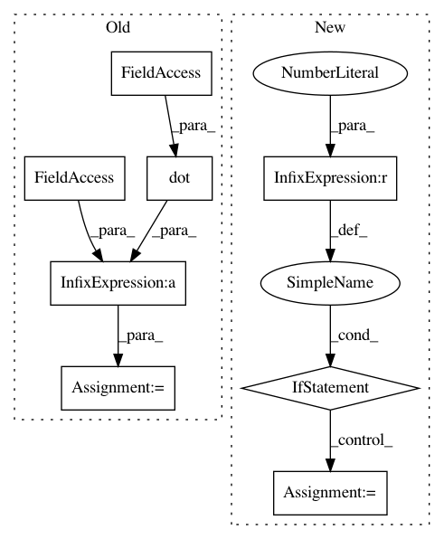

abca83373d6d7df2747c5cdcc2bb7234395604e6,keras/layers/recurrent.py,GRU,step,#GRU#Any#Any#,408
Before Change
B_U = states[2] // dropout matrix for recurrent units
x_z = K.dot(x * B_W[0], self.W_z) + self.b_z
x_r = K.dot(x * B_W[1], self.W_r) + self.b_r
x_h = K.dot(x * B_W[2], self.W_h) + self.b_h
z = self.inner_activation(x_z + K.dot(h_tm1 * B_U[0], self.U_z))
r = self.inner_activation(x_r + K.dot(h_tm1 * B_U[1], self.U_r))
After Change
def step(self, x, states):
h_tm1 = states[0] // previous memory
if len(states) == 2:
B_U = states[1] // dropout matrices for recurrent units
else:
B_U = [1., 1., 1.]
x_z = x[:, :self.output_dim]
x_r = x[:, self.output_dim: 2 * self.output_dim]
x_h = x[:, 2 * self.output_dim:]
In pattern: SUPERPATTERN
Frequency: 3
Non-data size: 8
Instances
Project Name: keras-team/keras
Commit Name: abca83373d6d7df2747c5cdcc2bb7234395604e6
Time: 2016-02-24
Author: francois.chollet@gmail.com
File Name: keras/layers/recurrent.py
Class Name: GRU
Method Name: step
Project Name: keras-team/keras
Commit Name: abca83373d6d7df2747c5cdcc2bb7234395604e6
Time: 2016-02-24
Author: francois.chollet@gmail.com
File Name: keras/layers/recurrent.py
Class Name: SimpleRNN
Method Name: step
Project Name: keras-team/keras
Commit Name: 9ce20f0b7e0e99dae90d66bc9ddf076a6df22121
Time: 2015-06-03
Author: jason.ramapuram@viasat.com
File Name: keras/layers/core.py
Class Name: AutoEncoder
Method Name: get_output